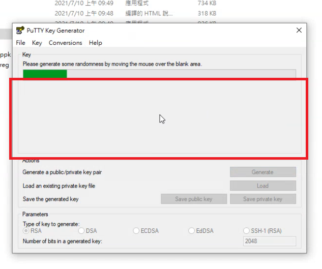
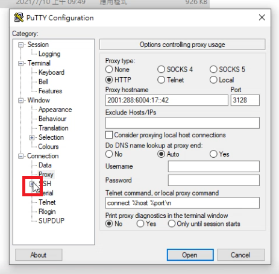

Midterm <<
Previous Next >> ShareX 狀況排除
ipv6 連線設定
為了因應實體ip不足的情況，以及外部連線攻擊，導致網路癱瘓，
老師從ip數不足的ipv4改成新式虛擬ip充足的ipv6進行連線，
因為ipv6有六個區段，外部連接的駭客要成功入侵，需要大量嘗試，較不易破解。
操作影片：https://youtu.be/NwKKqGKRRao
操作程序：
1.左下windows開始按鈕
2.設定齒輪

3.網路和網際網路

4.乙太網路
5.變更介面卡選項

6.快速點擊兩次乙太網路

7.乙太網路內容

8.取消勾選ipv4，防止外部連線攻擊
9.勾選ipv6切換為虛擬ip
10.ipv6內容

11.開啟dns代理主機選項

12.定位代理主機位置，系上的主機號碼為：「2001:b000:168::1」
13.Proxy

14.開啟Proxy設定
15.設定代理主機位置，系上號碼為：「2001:288:6004:17::42」

16.設定連接埠。埠號為：「3128」

Midterm <<
Previous Next >> ShareX 狀況排除